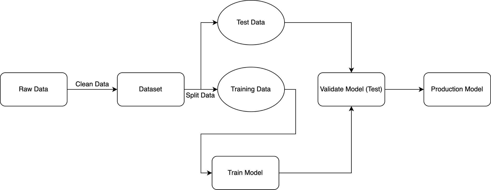

Introduction to Adversarial AI
By
@rzhade3
1. [Introduction to Machine Learning](#intro-ml) 1. [Introduction to Application Security](#intro-appsec) 1. [Comparing ML Sec with traditional AppSec](#compare-contrast) 1. [Confidentiality](#confidentiality) * [Model Inversion](#model-inversion) * [Model Stealing](#model-stealing) 1. [Integrity](#integrity) * [Dataset Poisoning](#dataset-poisoning) * [Evasion Attacks](#evasion) * [Prompt Injection](#prompt-injection) 1. [Availability](#availability) * [Denial of Service](#dos) 1. [Conclusion](#conclusion)
How do ML Systems Work?

What is Application Security?
## CIA Common acronym to describe main security goals * **C**onfidentiality: Maintain privacy of data * **I**ntegrity: Maintain trustworthy and accurate data + systems * **A**vailability: System should always be readily accessible
ML Models have vulnerabilities too!
| Similar | Different | | --- | --- | | ML Infrastructure is built on top of normal code | Machine Learning models tend to be black boxes with often non deterministic behavior | | DoS, Supply Chain issues also still manifest | *Lots* of side channel information is disclosed. |
Confidentiality
## Model Inversion Reverse engineer data that was used to train a model by making multiple queries to it **How to Fix?** Differential Privacy
## Model Stealing Querying a model enough times can allow you to steal it, by training on the model's output **How to fix?** Rate limiting
Integrity
## Dataset Poisoning Attack where attacker manipulates training data to influence model behavior * Especially vulnerable if training set is sourced publicly * Can lead to backdoors and other unwanted behavior **How to fix?** Choose and clean dataset carefully
## Evasion Attacks Attacks wherein a small change to an input results in incorrect classification * *Terminology:* data is "perturbed" when it is changed * Can be used to bypass security controls implemented by an ML model **How to fix?** Train with a robust dataset
## Prompt Injection *(Specific to LLMs)* Trick a LLM into changing its default behavior by a carefully crafted input prompt **How to Fix?** ???
Availability
## Denial of Service ML Models can be very compute intensive, and as such are subject to DoS attacks **How to fix?** * Rate limiting * Monitoring requests
## Key Takeaways To protect your systems, ensure that you are: 1. Monitoring all requests + system performance 1. Rate limiting 1. Training your models with robust, curated data 1. Implementing other supplementary security controls
## Learn More * [Adversarial AI Reading List](https://github.com/rzhade3/adversarial-ai-reading-list)